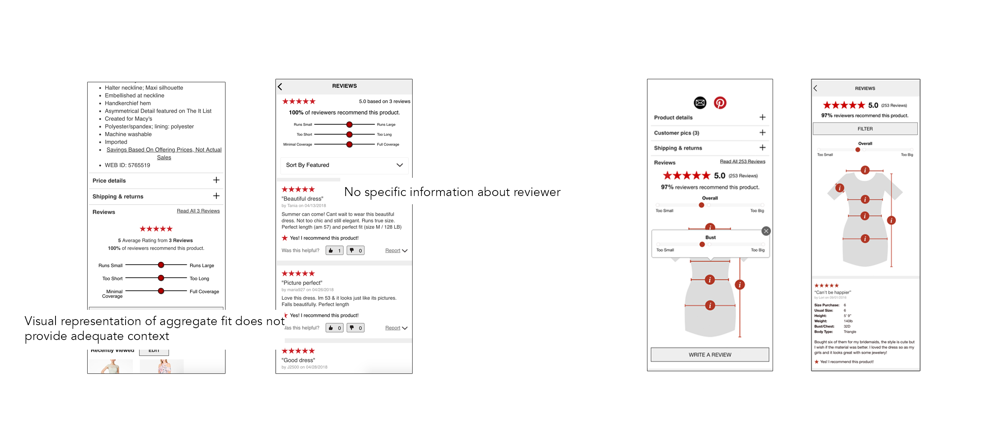

Tackling E-commerce's Biggest Challenge by Helping Users help Users
At Macy's.com one of the biggest challenges facing customers and the business was fit. How can we help customers understand how clothing will fit and flatter them before they make the purchase so that customers feel confident enough to purchase and feel good when the item come?
Our team concluded through research and testing that one of the main ways shoppers determined fit was through advice from other shoppers.
User Research

From customer research conducted via on-site interviews and through a remote survey, we learned:
1) Size charts are only useful for customers who know their measurements well. Other customers use different signals such as reviews, images and manufacturer details.
2) Size/fit was a common problem across all categories, not just apparel
3)Users are well equipped to using different tools on the site to get what information they need, but it does have some cognitive load impact because there are so many different tools.
Mental Model Mapping
From there, also analyzed different user mental models while shopping with fit in mind. We created different user flows that clarified goals, motivation for the goals, and tools used to achieve goals.

Information Sorting
We broke down the different user flows into key personas and mapped them to how they would want to recieve size and fit information onto an axis of flattery:size and prescriptive:descriptive. Then, we identified that we were lacking in flattery information from a descriptive source. Hence, we chose to focus on UGC as an area that could help customers understand how things would fit.
Prototype
I can't share too much of the end project as its currently being developed. Ultimately, we were able to create high fidelity prototypes (in a 1 week period!) and put it in front of users to garner really positive feedback prior to development. Our nexts include thinking through how to better emded the information we get from users into our product details page to appeal to users who are looking at different information sources (re: images, product details section, size charts).
User Feedback
One customer said “I love it, I would totally use it. I would probably shop here more if you guys have it." And another pointed out that our way of gathering information from customers (which we figured would be a drag) was easy to fill and asked the right amount of information.